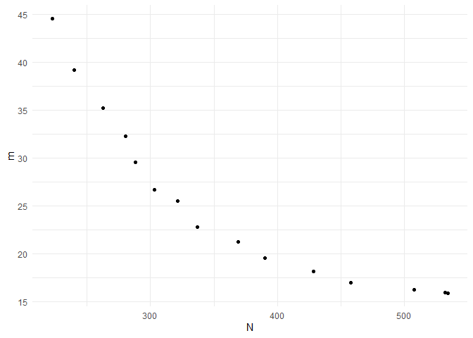

The goal of BOSSS is to help people use Bayesian optimisation to solve sample size determination problems when simulation is required to calculate operating characteristics.
Installation
Install the released version of tout from CRAN:
install.packages("BOSSS")Or you can install the development version of BOSSS from GitHub with:
# install.packages("devtools")
devtools::install_github("DTWilson/BOSSS")Example
Suppose we want to design a cluster-randomised controlled trial (cRCT) which will compare the mean outcomes of two groups. We need to choose per-arm number of clusters, , and the number of participants in each cluster, . We would like to choose a design that jointly minimises the total numbers of both clusters and participants whilst ensuring the trial has 80% power to detect the target difference.
Suppose that there is no analytic power function for this problem, and that we need to use simulation to estimate power instead. This can make the search process very slow and unwieldy. BOSSS helps by using Bayesian optimisation to carefully choose a design to evaluate at each iteration, aiming for those that will give the most improvement over the best designs found so far.
Key features:
- Trial design spaces can have several dimensions.
- Multiple objectives are handled in a non-scalarising way.
- Design optimisation problems can be constrained by deterministic or stochastic funstion.
The output of applying BOSSS to this problem is a set solutions which satisfy the power constraint and offer a range of trade-offs between the different objectives we are minimising (here, and ). For example, consider the following BOSSS_solution object which resulted from applying the BOSSS algorithm:
print(solution)
#> Design variables for the Pareto set:
#>
#> m n
#> 3 16.25000 31.250000
#> 22 40.48122 6.069682
#> 23 26.78465 11.300130
#> 25 31.99851 8.458535
#> 26 23.15534 14.411708
#> 29 15.86167 33.573895
#> 30 20.48457 18.825180
#> 31 17.78064 24.595059
#> 32 17.20562 27.002041
#> 33 21.47477 16.377383
#> 34 19.07500 21.685123
#> 35 36.42695 7.000018
#> 36 43.64308 5.105722
#> 37 15.65390 34.201300
#> 38 43.37548 5.165664
#> 40 28.34157 10.180265
#>
#> Corresponding objective function values...
#>
#> N, alt (mean) m, alt (mean)
#> 3 507.8125 16.25000
#> 22 245.7081 40.48122
#> 23 302.6700 26.78465
#> 25 270.6605 31.99851
#> 26 333.7080 23.15534
#> 29 532.5381 15.86167
#> 30 385.6257 20.48457
#> 31 437.3160 17.78064
#> 32 464.5869 17.20562
#> 33 351.7005 21.47477
#> 34 413.6437 19.07500
#> 35 254.9893 36.42695
#> 36 222.8294 43.64308
#> 37 535.3836 15.65390
#> 38 224.0632 43.37548
#> 40 288.5247 28.34157
#>
#> ...and constraint function values:
#>
#> s, alt (mean) s, alt (var)
#> 3 -1.635087 0.007321908
#> 22 -1.577629 0.007047103
#> 23 -1.591789 0.007113245
#> 25 -1.318214 0.006001954
#> 26 -1.442726 0.006465914
#> 29 -1.502002 0.006710669
#> 30 -1.613281 0.007215600
#> 31 -1.330260 0.006044017
#> 32 -1.515481 0.006768604
#> 33 -1.455710 0.006518154
#> 34 -1.570598 0.007014638
#> 35 -1.765190 0.008010631
#> 36 -1.410713 0.006340311
#> 37 -1.529077 0.006827921
#> 38 -1.481997 0.006626261
#> 40 -1.535920 0.006858112We have sixteen designs to choose from. For example, the final design in the set involves 288 patients and 28 clusters in each arm. The estimated power for that design is .
We can visualise the trade-offs between the two objectives by plotting the solution:
plot(solution)
For a detailed walkthrough of how to specify and solve a problems with BOSSS, see the “Getting started” tab. Other applications are collected in the “Examples” article.